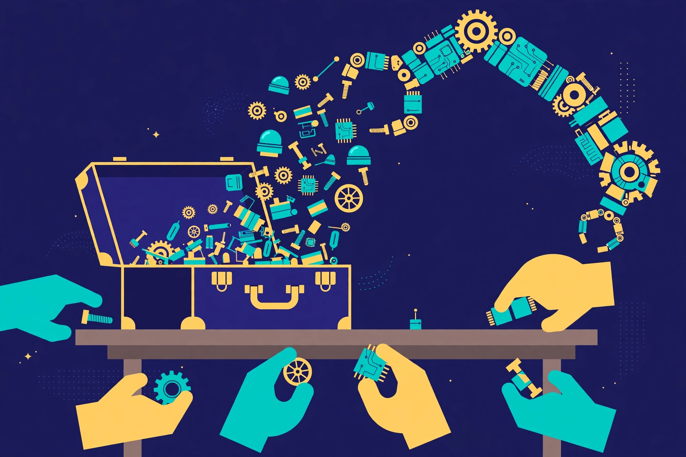
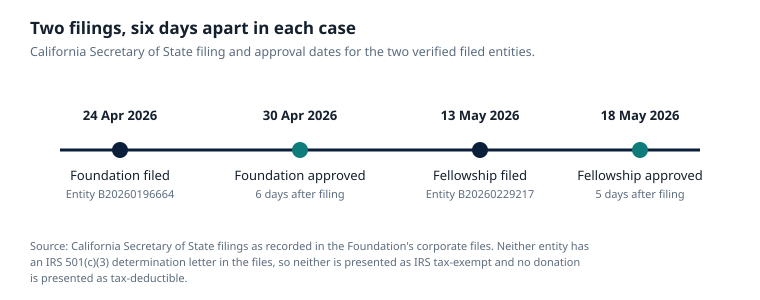

Article 61 · Robotics & Physical AI · AGI Future Foundation
The Robot Commons: ROS, Open Source, and the Shared Code Every Robot Stands On
Every robot you have ever seen stands on code its makers did not write. The arm that picks a part, the mobile base that crosses a warehouse, the drone that holds its position in wind: each of them runs, somewhere in its stack, on software that was written by strangers, published openly, and improved by people who will never meet the robot's owner. That shared code is the robot commons, and it is the most successful piece of infrastructure in robotics. It is also the most fragile, because a commons only survives as long as someone maintains it, and maintenance is the part of open source that nobody's business model naturally pays for.
Robotics DAO long-form series · AGI Future Foundation

Illustration (AI-generated): robot parts shared and recombined like building blocks. This is an illustration, not a photograph of a real robot, workshop, or project.
Every robot you have ever seen stands on code its makers did not write. The arm that picks a part, the mobile base that crosses a warehouse, the drone that holds its position in wind: each of them runs, somewhere in its stack, on software that was written by strangers, published openly, and improved by people who will never meet the robot's owner. That shared code is the robot commons, and it is the most successful piece of infrastructure in robotics. It is also the most fragile, because a commons only survives as long as someone maintains it, and maintenance is the part of open source that nobody's business model naturally pays for.
The commons has a name, and the name is ROS: the Robot Operating System. It is not, despite the name, an operating system. It is a set of software libraries and tools that help you build robot applications, from drivers to state-of-the-art algorithms, with powerful developer tools, and it is all open source. That description comes from the project itself, and its modesty is part of the point. ROS does not build robots. It gives the people who build robots a common starting point, so that they do not each have to reinvent the wheel, the motor driver, the mapping algorithm, and the message format before they can start on the thing that makes their robot different. The history of ROS is the history of that starting point being built, nearly lost, rebuilt, and then reorganised into something designed to last.
From a Stanford lab to the world's robots
The ideas behind ROS germinated at Stanford University in the mid-2000s, the brainchild of student researchers Keenan Wyrobek and Eric Berger, who were working in Kenneth Salisbury's robotics laboratory and leading the Personal Robotics Program. Their problem was ordinary and universal in robotics research: every new robot project began by rebuilding the same baseline system, and the rebuilding consumed the research. They wanted a common baseline so researchers would not have to keep reinventing the wheel for each new robot. By late 2007 and early 2008 they had joined efforts with Scott Hassan's Willow Garage, a robotics incubator, which began funding their robotics work under its Personal Robotics Program. The first ROS code repository was created at Willow Garage in November 2007, and the first commit of ROS code was made to SourceForge on 7 November 2007. The project they built, alongside the PR2 robot that Willow Garage developed as its follow-up to the PR1, was described by its makers as a "Linux for robotics": an open platform for all.
The scale of what followed is hard to overstate and easy to overclaim, so the numbers here are given with their sources attached. According to ABI Research, cited by Amazon Web Services, by 2024 roughly 55 percent of the world's robots would include a ROS package. That is a forecast reported by a vendor, not a census, and it should be read as one. What is not in doubt is the direction: over the decade after its launch, ROS became the industry's most popular robot software development framework, and by the late 2010s the demands being placed on it were starting to strain the original design. ROS 1 had been built for research labs, with a single master coordinating communication between components, and the world had taken it well beyond its intended scope, into commercial products, multi-robot systems, and safety-relevant applications it was never designed for.
The answer was ROS 2, and the story of ROS 2 is a story about what a commons does when its first version cannot carry the weight. Open Robotics, the foundation that shepherds ROS development, kicked off ROS 2 as a significant upgrade: multi-platform support, real-time communications, multi-robot communication, small embedded device capabilities, and more. The decision was deliberate and costly. As ROS developer Brian Gerkey wrote in "Why ROS 2?", the team chose not to build these capabilities into ROS 1 because, given the intrusive nature of the changes that would be required, there was too much risk associated with changing the system that so many people relied on. The move to ROS 2 therefore broke the API on which the ROS developer community depended, and the community had to start afresh to build out an ecosystem of modules to extend ROS 2, improving its stability bug by bug. ROS 2 was announced in 2014, its first version, code-named Ardent Apalone, was released in December 2017, and it has been the primary focus ever since. The final long-term release of ROS 1, Noetic, reached end of life in May 2025. As of 2025, more than 80 percent of user downloads from the ROS community are for ROS 2. The latest ROS 2 long-term release, Lyrical Luth, is supported until 2031.
The institutional history matters as much as the technical one, because a commons is an institution before it is a codebase. In 2012, as Willow Garage wound down, the Open Source Robotics Foundation (OSRF) was created to shepherd the open-source project, and by 2013 it had taken over ROS development. The OSRF owns the copyright to the ROS code, the trademarks, and other intellectual property related to ROS and its sister projects. In 2014, stewardship of ROS was transferred to the OSRF, a 501(c)(3) non-profit organisation. In late 2022, the majority of Open Robotics was acquired by Intrinsic, an Alphabet company: the Open Source Robotics Corporation and its Singapore entity were acquired, while the OSRF itself remained an independent non-profit, controlling the ROS trademarks and websites, with the primary development team for ROS now working at Intrinsic. That split, a commercial company holding the engineering team and a non-profit holding the trademarks and the mission, is the kind of arrangement that only works if the governance is explicit, and in 2024 it became explicit in a new form.
Who governs the commons
In March 2024, Open Robotics announced the Open Source Robotics Alliance, the OSRA, a new initiative from the OSRF to ensure the long-term stability and health of its open-source robot software projects. The OSRA began operations on 15 April 2024, and it is the clearest existing example of what governance of a shared robotics resource actually looks like. It is worth describing in detail, because it is a working model, and because any Robotics DAO that ever governs deployments would be governing on top of a commons that is already governed this way.
The OSRA uses a mixed membership and meritocratic participation model. That phrase carries a specific meaning: stakeholders of all types can participate in and support the OSRF's open-source projects in the way that best matches their needs and available resources, while the OSRF still receives the financial support it needs. Paid membership provides financial support, on a model the OSRA's announcement notes is commonly used among open-source non-profit organisations. At the same time, participation is meritocratic: people earn standing by doing the work, not only by paying. The responsibility for managing the OSRF's open-source projects, ROS, Gazebo, Open-RMF, and the infrastructure that supports them, was assigned to the OSRA by the OSRF Board.
The structure has three layers, and each layer has a defined job. The centre of activity is the Technical Governance Committee, the TGC, which oversees the activities of the Project Management Committees, the PMCs. Each PMC is responsible for one project: there are four, for ROS, Gazebo, Open-RMF, and infrastructure. The TGC answers to the OSRF's Board of Directors, ensuring the Board retains final oversight of the OSRF's projects and activities. The model was an explicit move away from the BDFL model, benevolent dictator for life, that the Open Source Robotics Corporation had represented. The point of the move was durability: a commons governed by one company, however benevolent, is a commons that can be sold, redirected, or abandoned. A commons governed by a committee structure answerable to a non-profit board is a commons with more than one throat to choke and more than one hand on the wheel.
The OSRA's funding rounds show how the model works in practice. In July 2025, the TGC considered a proposal to disburse $250,000 for an initial funding round provided by the OSRF, funding work to enable the use of Cargo-provided dependencies in the build farm, with the goal of enabling software built on the build farm to depend on external software written in Rust, alongside documentation improvements across the ROS, Gazebo, and Open-RMF projects. The proposal was approved by consensus. That is a small amount of money by the standards of the robotics industry, and that is the point: the commons runs on small, deliberate allocations of shared funds to shared infrastructure, decided in the open, in meetings whose minutes are published. Canonical, the company behind Ubuntu, upgraded its OSRA membership to platinum in August 2025, and its vice-president of engineering described the decision as reflecting a belief in open, community-led governance. Open Robotics' chief technical officer called Canonical one of the longest continuous contributors to open-source robotics. The membership is not a purchase of influence; it is a public commitment to a governance structure that the member does not control.
What the commons contains, and what it does not
ROS is middleware, and that word deserves a plain explanation, because it explains both the power and the limits of the commons. ROS is not an operating system like Windows or Linux. It is a layer that runs on top of a traditional operating system, usually Ubuntu Linux, providing the building blocks for robotic applications: the means for different parts of a robot's software to communicate, the tools to inspect and debug that communication, and the libraries that implement common robotics functions such as mapping, localisation, motion planning, and perception. The core of ROS 2 includes about 400 packages, listed in the release's ros2.repos file, hosted on GitHub and mostly Apache-2.0 licensed, with some older code under the three-clause BSD license. Both the language-independent tools and the main client libraries, in C++, Python, and Lisp, are released under the BSD license, and as such are open-source software and free for both commercial and research use.
That licensing is the commons' legal foundation, and it is worth stating plainly what it does and does not do. A BSD or Apache-2.0 licence lets anyone use, modify, and distribute the code, including in commercial products, without paying a licence fee and without opening their own code. What it does not do is provide a warranty, accept liability, or promise maintenance. The code is offered as it is, and the responsibility for what a product built on it does in the world sits with the product's maker, not with the commons. That distinction is not a legal technicality. It is the reason the European Union's revised Product Liability Directive, Directive (EU) 2024/2853, excludes free and open-source software developed or supplied outside the course of a commercial activity from its strict liability net, while holding the manufacturer of a commercial product liable for the finished product, including a defective AI component built in within its control. The commons supplies the bricks. The builder is liable for the house.
The commons also contains the tools that surround ROS. Gazebo is the simulator in which robots are tested before they touch the real world, and its importance is easy to understate: a robot that has only ever been tested in simulation has not been tested at all, but a robot that has never been tested in simulation is a danger to everyone near it. Open-RMF, the Open Robotics Middleware Framework, is the coordination layer for multiple robot fleets and physical infrastructure, described in the first article of this series. And beyond the OSRF's projects sits a wider ecosystem of open-source robotics work: the ROS-Industrial consortium, which adapts ROS for manufacturing; Space ROS, the community project, led by PickNik Robotics and the Open Source Robotics Foundation, that adapts ROS 2 for aerospace mission and safety assurance requirements; and the countless packages, drivers, and tools published by individual researchers and companies. The commons is not one project. It is a stack of projects, each maintained by different people, each depending on the others.
What can go wrong with a commons
A commons fails in slow, quiet ways, and the failures are worth naming because they are the failures a Robotics DAO would inherit if it ever built on this stack. The first is the oldest problem in open source: the work that matters most is the work nobody wants to pay for. Writing a new feature is visible and rewarding. Maintaining a build farm, triaging issues, reviewing other people's code, updating documentation, and keeping a decade-old package building against a new compiler are invisible and thankless, and they are also the work on which everything else depends. The OSRA's funding model is an answer to this problem, but it is a partial one: membership fees and small funding rounds cover a fraction of what the maintenance actually costs, and the gap is filled by the salaried time of engineers at member companies and by volunteers. A commons that depends on volunteers for its critical infrastructure is a commons with a single point of failure in every volunteer's calendar.
The second failure is capture. A commons governed by a committee can be captured by its largest members, not by conspiracy but by arithmetic: the members who pay the most, attend the most meetings, and employ the most maintainers end up shaping the roadmap, and the roadmap ends up serving their products. The OSRA's mixed membership and meritocratic model is designed to resist this, by giving standing to people who do the work regardless of what they pay, and by keeping final oversight with the OSRF's non-profit board. But the design is not a guarantee. The Intrinsic acquisition of 2022 is the case in point: the majority of Open Robotics, including the primary development team for ROS, now works inside an Alphabet subsidiary, while the OSRF remains an independent non-profit holding the trademarks and the mission. That arrangement has held so far, and the OSRA is part of why it has held. It is worth saying plainly, though, that the arrangement is a trust-based one. If the engineering team and the mission ever diverge, the commons will discover, quickly, which of the two actually controls the code.
The third failure is security. Open-source code is auditable, which is a strength, and it is also widely deployed, which makes it a target. A vulnerability in a ROS 2 communication library is a vulnerability in a large fraction of the world's robots. The OSRA's funding rounds have included work on improving security postures, and Canonical's contribution has included work on improving the security of open-source software, but security in a commons is a collective-action problem: every user benefits from a fix, and no single user has a strong incentive to pay for the audit that finds the flaw. A fleet governor that deploys robots built on the commons inherits this problem directly. It cannot audit the whole stack, and it cannot assume someone else has.
The fourth failure is the one that matters most for this series, and it is a confusion rather than a bug: the confusion between using the commons and owning it. A company that builds a product on ROS does not own ROS. A DAO that governs deployments of robots running ROS does not govern ROS. The commons is governed by its own institutions, the OSRF board, the OSRA's Technical Governance Committee, the project management committees, and the maintainers, and a deployment governor that mistakes its authority over a deployment for authority over the software is making a category error with legal consequences. The deployment governor's authority is over where a robot may operate, under whose supervision, and with what safeguards. The commons' authority is over what the software does. Those are different jurisdictions, and they should stay different, because the day a deployment governor starts dictating the contents of the commons is the day the commons stops being a commons.
What the commons means for a Robotics DAO that does not exist yet
Robotics DAO is proposed, not formed. That fact, repeated in the status box at the top of this article, is usually read as a disclaimer. Read the other way, it is an opportunity: a series that does not exist yet can decide, before it has any sunk costs, what its relationship to the commons will be. Most robotics companies discover the commons after they have already built on it, and their relationship is then a matter of habit and accident. A series that starts from the question can make it a matter of policy. Four policies are worth writing down now, while they cost nothing, so that they are already in place if the series ever forms.
Build on the commons; do not rebuild it. The first policy is the simplest and the hardest to keep. Every robotics project is tempted to write its own middleware, its own message format, its own fleet protocol, because the existing ones do not do exactly what the project wants. The history of ROS is the history of that temptation being resisted, badly at first and then well, and the result is a stack that works because thousands of people have already found and fixed its failures. A series that builds its deployment standards on ROS 2, Open-RMF, and the interoperability standards described in the first article of this series inherits that testing. A series that builds its own stack inherits the testing burden instead, and it will not have the people to carry it.
Contribute back, in the open, as a matter of policy. The second policy follows from the first. A deployment governor that uses the commons and never contributes to it is a free rider, and free riding is a strategy that works until the commons degrades enough that the governor's own deployments suffer. Contribution does not have to mean code, though code is the most valuable kind. It can mean documentation, bug reports with reproduction cases, testing on real hardware, and funding for the maintenance work nobody else wants to pay for. The OSRA's mixed model gives a template: membership and money on one side, meritocratic participation on the other, with standing earned by doing the work. A series that joined that model, as a member and as a contributor, would be doing something more useful than writing a white paper about the commons. It would be keeping it alive.
Keep the commercial line visible. The third policy is about honesty, and it is the one the liability law makes necessary. Free and open-source software supplied outside commercial activity is outside the EU Product Liability Directive's strict liability net. A commercial product built on it is inside that net, and its manufacturer is liable for the finished product. A series that governs deployments must therefore keep a visible, documented line between the commons it uses and the commercial deployments it governs, so that nobody, neither a regulator nor an injured person nor a court, has to guess which side of the line a given piece of software sits on. That line is also the line between the Foundation's nonprofit mission and any future commercial activity: the Foundation, as filed, is a nonprofit public benefit corporation that cannot offer equity, a SAFE, or a profit share, and its fundraising is donation and grant only. A deployment governor that blurred the commons, the nonprofit, and a commercial product into one undifferentiated "ecosystem" would be creating the exact confusion the law punishes.
Do not mistake the map for the territory. The fourth policy is about simulation, and it is the one the commons makes most tempting to violate. Gazebo lets a team test a robot thousands of times without ever touching a real machine, and that is a genuine good. But a simulated robot that succeeds proves something about the simulation. It proves nothing about a machine that lifts, drives, and works alongside people. A series that governs deployments must write that boundary into its standards before a single asset is hosted, and repeat it every time a simulation result is cited. The Foundation's own site makes the same point about Robotics DAO's metaverse absence: the series has no anchored metaverse fabric, no wallet, no contract, no chain, no token, no members, and no votes on record, and none is claimed. If a simulation environment were ever proposed, what would be needed first is a defined fabric, a stated purpose, and a clear statement of what is simulated and what is not.

Chart: California Secretary of State filing and approval dates for the two verified filed entities. The Foundation filed 24 April 2026 and was approved 30 April 2026; the Fellowship filed 13 May 2026 and was approved 18 May 2026. Source: California Secretary of State filings as recorded in the Foundation's corporate files. Neither entity has an IRS 501(c)(3) determination letter in the files.
The commons is the reason a small, proposed series can even contemplate governing robot deployments. Twenty years ago, governing a fleet would have meant building the entire software stack first, and only the largest companies could have afforded it. Today the stack exists, it is open, it is governed by institutions that publish their minutes, and it is maintained by a community that includes the largest companies in the world alongside individual volunteers. That is a remarkable fact, and it is worth saying plainly that it is also a fragile one. The commons survives because people keep choosing to maintain it, fund it, and govern it in the open. A Robotics DAO, if it ever forms, would be a beneficiary of those choices before it was a contributor to them. The honest way to begin is to acknowledge the debt, and then to pay it, in code, in documentation, in funding, and in the discipline of keeping the line between the commons and the commercial world visible. The robots will run on the commons either way. Whether the commons is still there in ten years depends on what its users do next.
Frequently asked questions
What is ROS?
The Robot Operating System is a set of open-source software libraries and tools that help you build robot applications, from drivers to state-of-the-art algorithms, with powerful developer tools. Despite the name, it is not an operating system. It is middleware that runs on top of a traditional operating system, usually Ubuntu Linux. ROS 2 is the current major version; ROS 1 reached end of life with its final release, Noetic, in May 2025.
Who owns ROS?
The Open Source Robotics Foundation, a 501(c)(3) non-profit, owns the copyright to the ROS code, the trademarks, and related intellectual property. Since March 2024, the Open Source Robotics Alliance (OSRA) has managed the projects, ROS, Gazebo, Open-RMF, and infrastructure, under a Technical Governance Committee answerable to the OSRF Board. In late 2022 the Open Source Robotics Corporation, including the primary ROS development team, was acquired by Intrinsic, an Alphabet company; the OSRF itself remained independent.
Is ROS free to use in commercial products?
Yes. The core is mostly Apache-2.0 licensed, with some older code under the three-clause BSD licence, and the main client libraries are BSD licensed, free for both commercial and research use. Free use is not the same as freedom from liability: a manufacturer that builds ROS into a commercial product is liable for the finished product, including a defective AI component built in within its control, under the EU Product Liability Directive.
What is Gazebo?
The open-source simulator maintained alongside ROS, in which robots are tested before they touch the real world. Simulation results are evidence about the simulation, not evidence about a real deployment.
Does Robotics DAO govern ROS?
No. Robotics DAO is proposed, not formed, and it would govern deployments, not software. ROS is governed by its own institutions: the OSRF Board, the OSRA's Technical Governance Committee, and the project management committees. Inquiries about the Foundation go to x@agifuturefoundation.org.
Glossary
- BDFL (benevolent dictator for life): a governance model in which one person holds final authority over an open-source project. The OSRA replaced the BDFL model that the Open Source Robotics Corporation had represented.
- BSD licence: a permissive open-source licence that allows use, modification, and distribution, including in commercial products, without opening the user's own code.
- Commons: a shared resource maintained collectively. Here, the open-source software, tools, and infrastructure that robotics builds on.
- Gazebo: the open-source robot simulator maintained alongside ROS.
- Middleware: software that sits between an operating system and applications, providing common services. ROS is middleware, not an operating system.
- Open-RMF: the Open Robotics Middleware Framework, an open-source system for coordinating multiple robot fleets and physical infrastructure.
- OSRA (Open Source Robotics Alliance): the OSRF initiative, launched March 2024 and operating from 15 April 2024, that manages ROS, Gazebo, Open-RMF, and infrastructure under a Technical Governance Committee.
- OSRF (Open Source Robotics Foundation): the 501(c)(3) non-profit that owns the ROS copyright, trademarks, and related intellectual property.
- ROS 2: the current major version of the Robot Operating System, announced 2014, first released December 2017, designed for real-time control, multi-robot systems, and embedded platforms.
References
- ROS, "ROS — Robot Operating System" (ros.org) — the project's own description, current releases, and support channels. https://www.ros.org/
- Amazon Web Services, "How AWS is helping to open source the future of robotics" — ROS history from Stanford and Willow Garage, the ABI Research figure of roughly 55% of the world's robots including a ROS package by 2024, and the move to ROS 2. https://aws.amazon.com/blogs/opensource/aws-helping-open-source-future-robotics/
- Wikipedia, "Robot Operating System" — history, licensing, Space ROS, release dates. https://en.wikipedia.org/wiki/Robot_Operating_System
- LWN.net, "A look at the Robot Operating System" — ROS 1's 2010 release, the OSRF's creation in 2012, ROS 2's production readiness, more than 80% of downloads for ROS 2 as of 2025, the OSRA. https://lwn.net/Articles/1031669/
- Open Robotics, "Announcing the Open Source Robotics Alliance" (18 Mar 2024) — the OSRA's mixed membership and meritocratic model, the Technical Governance Committee and Project Management Committees, operations from 15 April 2024. https://www.openrobotics.org/blog/2024/3/18/announcing-the-open-source-robotics-alliance-osra
- Ubuntu, "Canonical is now a platinum member in the Open Source Robotics Alliance" (20 Aug 2025) — the OSRA's launch in March 2024, Canonical's upgraded membership, open community-led governance. https://ubuntu.com/blog/osra-membership
- Wikipedia, "Open Robotics" — the OSRF's creation in May 2012, the Intrinsic acquisition of December 2022, the OSRA replacing the OSRC in April 2024, funding sources. https://en.wikipedia.org/wiki/Open_Robotics
- Open Robotics TGC meeting minutes, 24 July 2025 — the $250,000 initial OSRA funding round, Rust build-farm dependencies, documentation improvements. https://github.web.gylab.com/openrobotics/technical_governance_committee_minutes/raw/refs/heads/main/20250724%20-%20TGC%20Meeting%20Minutes%20-%2024%20July%202025.pdf
- Osborne Clarke, "Physical AI and strict liability: What is the impact of the EU Product Liability Directive?" — the free and open-source software exception and manufacturer liability for built-in AI components. https://www.osborneclarke.com/insights/physical-ai-and-strict-liability-what-impact-eu-product-liability-directive
- AGI Future Foundation, "Robotics DAO: Governing Machines That Act in the World" (Article 20). https://www.agifuturefoundation.org/articles/article-20-robotics-dao.html
Nothing in this article is legal, tax, or financial advice, and no signing, membership, payment, investment, or offering is made here. Robotics DAO is proposed, not formed, funded, or offered.
Series page: Robotics DAO (S30). Related articles: One Fleet, Many Owners (Article 60) · Working Beside Machines (Article 62)
Contact
Questions about Robotics DAO, or about the Foundation's work in this category, go to x@agifuturefoundation.org. Say who you are, what your interest is, and what you could contribute. A reply, if one comes, will come from a human. This page is not an offer of securities and not a solicitation of funds: no price, terms, or return is promised, and no funding is being sought for this series. Nothing on this page is legal, tax, or financial advice.